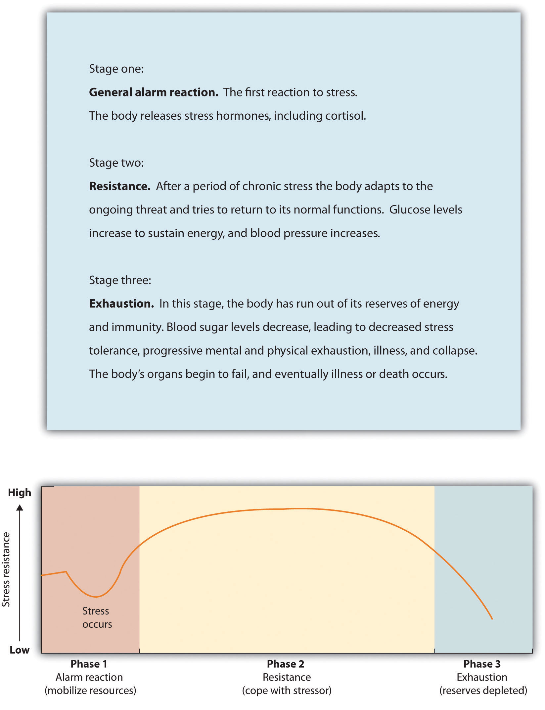
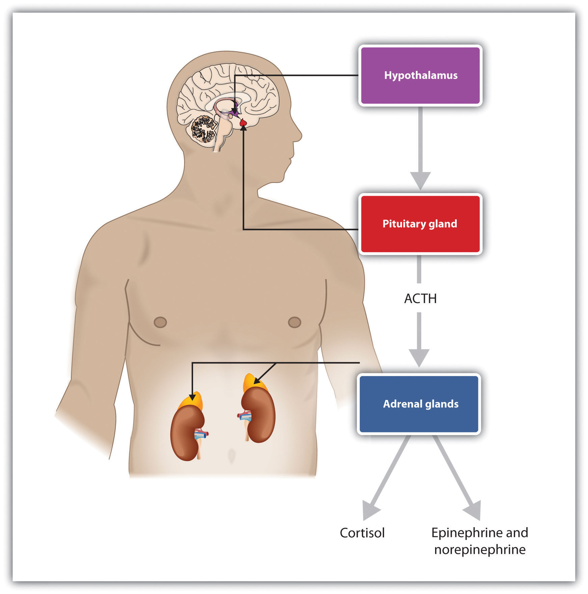

People generally feel positive, both about themselves and about the other people around them. In fact, people in almost all nations, both men and women, and people of all ages report that they are satisfied—at least above the neutral point—on ratings of well-being (Diener, Suh, Lucas, & Smith, 1999; Kahneman, Diener, & Schwarz, 1999).Diener, E., Suh, E. M., Lucas, R. E., & Smith, H. L. (1999). Subjective well-being: Three decades of progress. Psychological Bulletin, 125(2), 276–302; Kahneman, D., Diener, E., & Schwarz, N. (Eds.). (1999). Well-being: The foundations of hedonic psychology. New York, NY: Russell Sage Foundation. Nevertheless, there many social situations that can create negative feelings, and this negative affect can have a variety of negative outcomes on people’s experiences. In this section, we will consider how negative events influence our affective states and how the negative affect we experience can influence our health and happiness. We will also consider how we can use positive affect to cope with the potential negative events that we may experience.
Emotions matter because they influence our behavior. And there is no emotional experience that has a more powerful influence on us than stress. Social psychologists define stressThe physical and psychological reactions that occur whenever we believe that the demands of a situation threaten our ability to respond to the threat. as the physical and psychological reactions that occur whenever we believe that the demands of a situation threaten our ability to respond to the threat (Lazarus, 2000; Lazarus & Folkman, 1984).Lazarus, R. S. (2000) Toward better research on stress and coping. American Psychologist, 55, 665–673; Lazarus, R. S., & Folkman, S. (1984). Stress, appraisal, and coping. New York, NY: Springer Publishing Company. We experience stress when we find ourselves in situations where we are not sure how to respond or whether we are going to be able to adequately cope.
People who have recently experienced negative situations—for example, being the victim of a terrorist attack or a natural disaster, going through a divorce, or experiencing the death of a close loved one—report experiencing stress. Survivors of Hurricane Katrina had a rate of heart attacks that was three times higher than the national average in the years following the disaster, and this was probably due to the stress that the hurricane created (American Medical Association, 2009).American Medical Association. (2009). Three-fold heart attack increase in Hurricane Katrina survivors. Retrieved from http://www.ama-assn.org/ama/pub/news/news/heart-attack-katrina-survivors.shtml And people in New York City who lived nearer to the site of the 9/11 terrorist attacks reported experiencing more stress in the year following it than those who lived farther away (Lampert, Baron, McPherson, & Lee, 2002; Pulcino et al., 2003).Lampert, R., Baron, S. J., McPherson, C. A., & Lee, F. A. (2002). Heart rate variability during the week of September 11, 2001. JAMA, 288, 575; Pulcino, T., Galea, S., Ahern, J., Resnick, H., Foley, M., & Vlahov, D. (2003). Posttraumatic stress in women after the September 11 terrorist attacks in New York City. Journal of Women’s Health, 12(8), 809–820.
Extreme social situations, such as being the victim of a terrorist attack, a natural disaster, or a violent crime, may produce an extreme form of stress known as post-traumatic stress disorder (PTSD)A medical syndrome that includes symptoms of anxiety, sleeplessness, nightmares, and social withdrawal., a medical syndrome that includes symptoms of anxiety, sleeplessness, nightmares, and social withdrawal. The syndrome is frequently experienced by soldiers who return home from wars; those who experience more extreme events during a war also experience more severe PTSD.
Stress is accompanied by increases in arousal. When we experience stress, our heart rate, breathing, and blood pressure increase, and our body begins to secrete adrenaline and other hormones. Perspiration increases to cool down the body. In addition, sugar is released to provide energy, and the pupils dilate to improve our vision. At the same time, the less immediately essential body activities controlled by the parasympathetic nervous system (PNS), including digestion, are reduced in order to divert more energy to allow the body to react to the threat.
The experience of stress likely had positive aspects for human beings in an evolutionary sense. When we are attacked, afraid, or concerned about our welfare, the body signals us that we need to react, and the stress response is one of those signals. But problems begin when a threat continues over time. When it is extreme or prolonged, stress can create substantial negative mental and physical effects. In fact, when stress occurs for too long, it can lead to exhaustion and even death.
The physiologist Hans Seyle (1907–1982) studied stress by examining how rats responded to being exposed to stressors such as extreme cold, infection, shock, and excessive exercise. Seyle found that regardless of the source of the stress, the rats experienced the same series of physiological changes as they suffered the prolonged stress. Seyle created the term general adaptation syndromeThe three distinct phases of physiological change that occur in response to long-term stress: alarm, resistance, and exhaustion. to refer to the three distinct phases of physiological change that occur in response to long-term stress: alarm, resistance, and exhaustion (Figure 3.5 "General Adaptation Syndrome").
Figure 3.5 General Adaptation Syndrome
Hans Seyle’s research on the general adaptation syndrome documented the stages of prolonged exposure to stress.
The experience of stress creates both an increase in general arousal in the sympathetic nervous system (SNS) and another, even more complex, system of physiological changes through the HPA axis (Figure 3.6 "HPA Axis"). The HPA axisA physiological response to stress involving interactions among the hypothalamus, the pituitary gland, and the adrenal glands. is a physiological response to stress involving interactions among the hypothalamus, the pituitary gland, and the adrenal glands. The HPA response begins when the hypothalamus secretes hormones that direct the pituitary gland to release the hormone ACTH. The ACTH then directs the adrenal glands to secrete more hormones, including epinephrine, norepinephrine, and cortisolA stress hormone that releases sugars into the blood to help prepare the body to respond to threat., a stress hormone that releases sugars into the blood to help prepare the body to respond to threat(Rodrigues, LeDoux, & Sapolsky, 2009).Rodrigues, S. M., LeDoux, J. E., & Sapolsky, R. M. (2009). The influence of stress hormones on fear circuitry. Annual Review of Neuroscience, 32, 289–313.
Cortisol is frequently referred to as the “stress hormone,” and it is commonly measured by researchers in order to assess the activation of the HPA axis in response to stress. Cortisol is measured by taking a sample of saliva, which is then analyzed to determine cortisol levels. Cortisol increases when people are stressed, for instance, when they are in dancing competitions (Edelstein, Yim, & Quas, 2010),Edelstein, R. S., Yim, I. S., & Quas, J. A. (2010). Narcissism predicts heightened cortisol reactivity to a psychosocial stressor in men. Journal of Research in Personality, 44(5), 565–572. when they are experiencing public shame (Rohleder, Chen, Wolf, & Miller, 2008),Rohleder, N., Chen, E., Wolf, J. M., & Miller, G. E. (2008). The psychobiology of trait shame in young women: Extending the social self-preservation theory. Health Psychology, 27(5), 523–532. and (I’m sure you won’t be surprised) when taking school exams (Preuss, Schoofs, Schlotz, & Wolf, 2010).Preuss, D., Schoofs, D., Schlotz, W., & Wolf, O. T. (2010). The stressed student: Influence of written examinations and oral presentations on salivary cortisol concentrations in university students. Stress: The International Journal on the Biology of Stress, 13(3), 221–229.
Figure 3.6 HPA Axis
Stress activates the HPA axis. The result is the secretion of epinephrine, norepinephrine, and cortisol.
The experience of prolonged stress has a direct negative influence on our physical health because at the same time that stress increases activity in the SNS, it also suppresses important activity in the PNS. When stress is long-term, the HPA axis remains active and the adrenals continue to produce cortisol. This increased cortisol production exhausts the stress mechanism, leading to fatigue and depression.
The HPA reactions to persistent stress lead to a weakening of the immune system, making us more susceptible to a variety of health problems, including colds and other diseases (Cohen & Herbert, 1996; Faulkner & Smith, 2009; Miller, Chen, & Cole, 2009; Uchino, Smith, Holt-Lunstad, Campo, & Reblin, 2007).Cohen, S., & Herbert, T. B. (1996). Health psychology: Psychological factors and physical disease from the perspective of human psychoneuroimmunology. Annual Review of Psychology, 47, 113–142; Faulkner, S., & Smith, A. (2009). A prospective diary study of the role of psychological stress and negative mood in the recurrence of herpes simplex virus (HSV1). Stress and Health: Journal of the International Society for the Investigation of Stress, 25(2), 179–187; Miller, G., Chen, E., & Cole, S. W. (2009). Health psychology: Developing biologically plausible models linking the social world and physical health. Annual Review of Psychology, 60, 501–524; Uchino, B. N., Smith, T. W., Holt-Lunstad, J., Campo, R., & Reblin, M. (2007). Stress and illness. In J. T. Cacioppo, L. G. Tassinary, & G. G. Berntson (Eds.), Handbook of psychophysiology (3rd ed., pp. 608–632). New York, NY: Cambridge University Press. Stress also damages our DNA, making us less likely to be able to repair wounds and respond to the genetic mutations that cause disease (Epel et al., 2006).Epel, E., Lin, J., Wilhelm, F., Wolkowitz, O., Cawthon, R., Adler, N.,…Blackburn, E. H. (2006). Cell aging in relation to stress arousal and cardiovascular disease risk factors. Psychoneuroendocrinology, 31(3), 277–287. As a result, wounds heal more slowly when we are under stress, and we are more likely to get cancer (Kiecolt-Glaser, McGuire, Robles, & Glaser, 2002; Wells, 2006).Kiecolt-Glaser, J. K., McGuire, L., Robles, T. F., & Glaser, R. (2002). Psychoneuroimmunology: Psychological influences on immune function and health. Journal of Consulting and Clinical Psychology, 70(3), 537–547; Wells, W. (2006). How chronic stress exacerbates cancer. Journal of Cell Biology, 174(4), 476.
Sheldon Cohen and colleagues (Cohen et al., 1998)Cohen, S., Frank, E., Doyle, W. J., Skoner, D. P., Rabin, B. S., & Gwaltney, J. M. Jr. (1998). Types of stressors that increase susceptibility to the common cold in adults. Health Psychology, 17, 214–23. demonstrated experimentally that repeated exposure to threats and stress can increase susceptibility to the common cold virus, revealing the causal link between psychological stress and actual susceptibility to disease. To begin, the researchers had adult volunteers fill out several questionnaires about the stressful experiences in their lives. Then the researchers administered nose drops into each participant’s nose. The control group (the lucky ones!) received a placebo saline solution; the experimental group received a solution containing a cold virus. Over the next week, the participants were examined daily by a nurse. None of the control group participants got a cold. But of those exposed to the cold virus, 82% did get a cold. Furthermore, within this condition, those participants who reported enduring long-term stressors—particularly those who felt that they were underemployed or who had enduring interpersonal difficulties with family or friends—were significantly more likely to catch colds than those who had only short-term stress.
Chronic stress is also a major contributor to heart disease. Although heart disease is caused in part by genetic factors, as well as by high blood pressure, high cholesterol, and cigarette smoking, it is also caused by stress (Krantz & McCeney, 2002).Krantz, D. S., & McCeney, M. K. (2002). Effects of psychological and social factors on organic disease: A critical assessment of research on coronary heart disease. Annual Review of Psychology, 53, 341–369. Long-term stress creates two opposite effects on the coronary system. Stress increases cardiac output (i.e., the heart pumps more blood) at the same time that it reduces the ability of the blood vessels to conduct blood through the arteries, as the increase in levels of cortisol leads to a buildup of plaque on artery walls (Dekker et al., 2008).Dekker, M., Koper, J., van Aken, M., Pols, H., Hofman, A., de Jong, F.,…Tiemeier, H. (2008). Salivary cortisol is related to atherosclerosis of carotid arteries. Journal of Clinical Endocrinology and Metabolism, 93(10), 3741. The combination of increased blood flow and arterial constriction leads to increased blood pressure (hypertension), which can damage the heart muscle, leading to heart attack and death.
The stressors for Seyle’s rats included electric shock and exposure to cold. Although these are probably not on your top-10 list of most common stressors, the stress that we experience in our everyday social interactions can also be taxing. Thomas Holmes and Richard Rahe (1967)Holmes, T. H., & Rahe, R. H. (1967). The social readjustment rating scale. Journal of Psychosomatic Research, 11, 213–218. developed a measure of some everyday life events that might lead to stress, and you can assess your own likely stress level by completing the measure in Table 3.1 "The Holmes and Rahe Stress Scale" and calculating your stress level by looking at Table 3.2 "Interpretation of the Holmes and Rahe Stress Scale". You might want to pay particular attention to this score because it can predict the likelihood that you will get sick. Rahe and his colleagues (Rahe, Mahan, Arthur, & Gunderson, 1970)Rahe, R. H., Mahan, J., Arthur, R. J., & Gunderson, E. K. E. (1970). The epidemiology of illness in naval environments: I. Illness types, distribution, severities and relationships to life change. Military Medicine, 135, 443–452. asked 2,500 members of the military to complete the rating scale and then assessed the health records of the soldiers over the following 6 months. The results were clear: The higher the scale score, the more likely the soldier was to end up in the hospital.
Table 3.1 The Holmes and Rahe Stress Scale
| Life Event | Score |
|---|---|
| Death of spouse | 100 |
| Divorce | 73 |
| Marital separation from mate | 65 |
| Detention in jail, other institution | 63 |
| Death of a close family member | 63 |
| Major personal injury or illness | 53 |
| Marriage | 50 |
| Retirement | 45 |
| Major change in the health or behavior of a family member | 44 |
| Pregnancy | 40 |
| Sexual difficulties | 39 |
| Gaining a new family member (e.g., through birth, adoption, oldster moving) | 39 |
| Major business readjustment (e.g., merger reorganization, bankruptcy) | 39 |
| Major change in financial status | 38 |
| Death of close friend | 37 |
| Change to different line of work | 36 |
| Major change in the number of arguments with spouse | 35 |
| Taking out a mortgage or loan for a major purchase | 31 |
| Foreclosure on a mortgage or loan | 30 |
| Major change in responsibilities at work | 29 |
| Son or daughter leaving home (e.g., marriage, attending college) | 29 |
| Trouble with in-laws | 29 |
| Outstanding personal achievement | 28 |
| Spouse beginning or ceasing to work outside the home | 26 |
| Beginning or ceasing formal schooling | 26 |
| Major change in living conditions | 25 |
| Revision of personal habits (dress, manners, associations, etc.) | 24 |
| Trouble with boss | 23 |
| Major change in working hours or conditions | 20 |
| Change in residence | 20 |
| Change to a new school | 20 |
| Major change in usual type and/or amount of recreation | 19 |
| Major change in church activities (a lot more or less than usual) | 19 |
| Major change in social activities (clubs, dancing, movies, visiting) | 18 |
| Taking out a mortgage or loan for a lesser purchase (e.g., for a car, television, freezer) | 17 |
| Major change in sleeping habits | 16 |
| Major change in the number of family get-togethers | 15 |
| Major change in eating habits | 15 |
| Vacation | 13 |
| Christmas season | 12 |
| Minor violations of the law (e.g., traffic tickets) | 11 |
| Total | ______ |
| Note. You can calculate your score on this scale by adding the total points across each of the events that you have experienced over the past year. Then use Table 3.2 "Interpretation of the Holmes and Rahe Stress Scale" to determine your likelihood of getting ill. | |
Table 3.2 Interpretation of the Holmes and Rahe Stress Scale
| Number of Life-Changing Units | Chance of Developing a Stress-Related Illness (%) |
|---|---|
| Less than 150 | 30 |
| 150–300 | 50 |
| More than 300 | 80 |
Although some of the items on the Holmes and Rahe scale are major, you can see that even minor stressors add to the total score. Our everyday interactions with the environment that are essentially negative, known as daily hasslesOur everyday interactions with the environment that are essentially negative., can also create stress, as well as poorer health outcomes (Hutchinson & Williams, 2007).Hutchinson, J. G., & Williams, P. G. (2007). Neuroticism, daily hassles, and depressive symptoms: An examination of moderating and mediating effects. Personality and Individual Differences, 42(7), 1367–1378. Events that may seem rather trivial altogether, such as having an argument with a friend or getting cut off by another car in rush-hour traffic, can produce stress (Fiksenbaum, Greenglass, & Eaton, 2006).Fiksenbaum, L. M., Greenglass, E. R., & Eaton, J. (2006). Perceived social support, hassles, and coping among the elderly. Journal of Applied Gerontology, 25(1), 17–30. Glaser (1985)Glaser, R. (1985). Stress-related impairments in cellular immunity. Psychiatry Research, 16(3), 233–239. found that medical students who were tested during, rather than several weeks before, their school examination periods showed lower immune system functioning. Other research has found that even more minor stressors, such as having to do math problems during an experimental session, can compromise the immune system (Cacioppo et al., 1998).Cacioppo, J. T., Berntson, G. G., Malarkey, W. B., Kiecolt-Glaser, J. K., Sheridan, J. F., Poehlmann, K. M.,…Glaser, R. (1998). Autonomic, neuroendocrine, and immune responses to psychological stress: The reactivity hypothesis. In Annals of the New York Academy of Sciences: Neuroimmunomodulation: Molecular aspects, integrative systems, and clinical advances (Vol. 840, pp. 664–673). New York, NY: New York Academy of Sciences.
Not all people experience and respond to stress in the same way, and these differences can be important. The cardiologists Meyer Friedman and R. H. Rosenman (1974)Friedman, M., & Rosenman, R. H. (1974). Type A behavior and your heart. New York, NY: Knopf. were among the first to study the link between stress and heart disease. In their research, they noticed that even though the partners in married couples often had similar lifestyles, diet, and exercise patterns, the husbands nevertheless generally had more heart disease than did the wives. As they tried to explain the difference, they focused on the personality characteristics of the partners, finding that the husbands were more likely than the wives to respond to stressors with negative emotions and hostility.
Recent research has shown that the strongest predictor of a physiological stress response from daily hassles is the amount of negative emotion that they evoke. People who experience strong negative emotions as a result of everyday hassles and who respond to stress with hostility experience more negative health outcomes than do those who react in a less negative way (McIntyre, Korn, & Matsuo, 2008; Suls & Bunde, 2005).McIntyre, K., Korn, J., & Matsuo, H. (2008). Sweating the small stuff: How different types of hassles result in the experience of stress. Stress & Health: Journal of the International Society for the Investigation of Stress, 24(5), 383–392. doi:10.1002/smi.1190; Suls, J., & Bunde, J. (2005). Anger, anxiety, and depression as risk factors for cardiovascular disease: The problems and implications of overlapping affective dispositions. Psychological Bulletin, 131(2), 260–300. Williams and his colleagues (2001)Williams, R. B. (2001). Hostility: Effects on health and the potential for successful behavioral approaches to prevention and treatment. In A. Baum, T. A. Revenson, & J. E. Singer (Eds.), Handbook of health psychology. Mahwah, NJ: Lawrence Erlbaum Associates.found that people who scored high on measures of anger were three times more likely to suffer from heart attacks in comparison with those who scored lower on anger.
On average, men are more likely than are women to respond to stress by activating the fight-or-flight responseAn emotional and behavioral reaction to stress that increases the readiness for action., which is an emotional and behavioral reaction to stress that increases the readiness for action. The arousal that men experience when they are stressed leads them to either go on the attack, in an aggressive or revenging way, or else retreat as quickly as they can to safety from the stressor. The fight-or-flight response allows men to control the source of the stress if they think they can do so, or if that is not possible, it allows them to save face by leaving the situation. The fight-or-flight response is triggered in men by the activation of the HPA axis.
Women, on the other hand, are less likely to take a fight-or-flight response to stress. Rather, they are more likely to take a tend-and-befriend response (Taylor et al., 2000).Taylor, S. E., Klein, L. C., Lewis, B. P., Gruenewald, T. L., Gurung, R. A. R., & Updegraff, J. A. (2000). Biobehavioral responses to stress in females: Tend-and-befriend, not fight-or-flight. Psychological Review, 107(3), 411–429. The tend-and-befriend responseA behavioral reaction to stress that involves activities designed to create social networks that provide protection from threats. is a behavioral reaction to stress that involves activities designed to create social networks that provide protection from threats. This approach is also self-protective because it allows the individual to talk to others about her concerns as well as to exchange resources, such as child care. The tend-and-befriend response is triggered in women by the release of the hormone oxytocin, which promotes affiliation. Overall, the tend-and-befriend response is healthier than the flight-or-flight response because it does not produce the elevated levels of arousal related to the HPA, including the negative results that accompany increased levels of cortisol. This may help explain why women, on average, have less heart disease and live longer than men.
The experience of long-term stress—and its potential negative impact on our physical and mental health—represents one example of the powerful influence of the social situation in our everyday lives. These findings represent social psychological principles in action: Our affect, cognition, and behavior are influenced in profound ways by the events that occur to us, and particularly by the people around us. Furthermore, the observed gender differences in response to stress demonstrate another example of the operation of the basic principles of social psychology: Men usually respond to stress by focusing on self-concern (fight or flight) whereas women are more likely to respond by focusing on other-concern (tend-and-befriend).
Unfortunately, stress is not the only negative health consequence that can be caused by our social interactions. DepressionAn affective disorder in which people experience sadness, low self-esteem, negative thoughts, pessimism, and apathy. is an affective disorder in which people experience sadness, low self-esteem, negative thoughts, pessimism, and apathy. Physical symptoms, such as loss of appetite and insomnia, may also accompany depression. Almost 3% of the U.S. population—that is, over 7 million people—experience a major depressive event every year, and the incidence is somewhat greater for women than for men (Kessler, McGonagle, Nelson, & Hughes, 1994).Kessler, R. C., McGonagle, K. A., Nelson, C. B., & Hughes, M. (1994). Sex and depression in the National Comorbidity Survey: II. Cohort effects. Journal of Affective Disorders, 30(1), 15–26. And many, many more people suffer from milder, but also harmful, forms of depression. Minor depression—the everyday negative mood or “blues” that most of us experience—is a part of everyday life for many people. It is no surprise that depression has been termed “the common cold of mental illness.”
Still another mental health outcome that relates to social behavior is anxietyA psychological disorder that may be accompanied by a number of physical symptoms, including diarrhea, upset stomach, sweaty hands, shortness of breath, poor concentration, and general agitation.—a psychological disorder that may be accompanied by a number of physical symptoms, including diarrhea, upset stomach, sweaty hands, shortness of breath, poor concentration, and general agitation. As with depression, anxiety may be severe in some cases for some people, but it can also occur in more subtle, minor, and yet nevertheless troubling forms for many people.
Anxiety and depression have many causes. These syndromes are partially genetically inherited and are also determined in part by body chemicals including hormones and neurotransmitters. Nevertheless, depression and anxiety are also largely socially determined, and social psychologists naturally focus on these aspects. To a social psychologist, depression and anxiety are maladies that are caused by our everyday social lives and that can be understood and treated—at least in part—in a social sense.
Depression and anxiety are caused at least partly by the lack of adequate social interactions. Almost half of Americans describe themselves as being shy. Shy people frequently find it difficult to make friends because they evaluate themselves negatively and feel that they cannot succeed in social encounters (Cheek & Melchior, 1990).Cheek, J. M., & Melchior, L. A. (1990). Shyness, self-esteem, and self-consciousness. In Handbook of social and evaluation anxiety (pp. 47–82). New York, NY: Plenum Press. Extremely shy people may become lonely, and loneliness is a risk factor for a large range of physical and mental health problems, including depression and anxiety (Cacioppo, Hawley, & Berston, 2003; Christensen & Kashy, 1998).Cacioppo, J. T., Hawley, L. C., & Bernston, G. G. (2003). The anatomy of loneliness. Current Directions in Psychological Science, 12(3), 71–74; Christensen, P. N., & Kashy, D. A. (1998). Perceptions of and by lonely people in initial social interaction. Personality and Social Psychology Bulletin, 24(3), 322–329. Depressed people frequently tend to avoid social interactions altogether, whereas shy, anxious people tend to become uncomfortable in public and may overestimate how much people are focusing on them. On the other hand, people who are more extroverted (i.e., who enjoy making friends and being in social situations) are less depressed and have fewer health problems (Diener, Suh, Lucas, & Smith, 1999).Diener, E., Suh, E. M., Lucas, R. E., & Smith, H. L. (1999). Subjective well-being: Three decades of progress. Psychological Bulletin, 125(2), 276–302.
Depression and anxiety are determined both by how we feel about our own performance and by our social interactions with others. We are more likely to feel good about ourselves when we perceive that we have adequate social interactions and that we are accepted and cared for by others—but we are more likely to feel poorly about ourselves when we perceive that we are not measuring up to the goals and standards that others find important. When we feel that there are discrepancies between our goals and the actual conditions in our lives, we feel more emotion (Carver & Scheier, 1981).Carver, C. S., & Scheier, M. F. (1981). Attention and self-regulation: A control-theory approach to human behavior. New York, NY: Springer-Verlag.
Tory Higgins and his colleagues (Higgins, Bond, Klein, & Strauman, 1986; Strauman & Higgins, 1988)Higgins, E. T., Bond, R. N., Klein, R., & Strauman, T. (1986). Self-discrepancies and emotional vulnerability: How magnitude, accessibility, and type of discrepancy influence affect. Journal of Personality and Social Psychology, 51(1), 5–15; Strauman, T. J., & Higgins, E. T. (1988). Self-discrepancies as predictors of vulnerability to distinct syndromes of chronic emotional distress. Journal of Personality, 56(4), 685–707. have proposed that the types of emotional distress we experience are determined by both our perceptions of how well our own behaviors meet the standards and goals we have provided ourselves (our internal standards) and our perceptions of how others think about us (our external standards). Higgins found in his research that people were more likely to experience sadness, dissatisfaction, and other depression-related emotions when they indicated that their current perception of themselves (the actual self-concept) was discrepant with their hopes and goals (the ideal self-concept). But people were more likely to experience fear, worry, tension, and other anxiety-related emotions when they felt that the actual self-concept was discrepant with their beliefs about important standards regarding duty and obligations (the ought self-concept).
Higgins also found in his research that the same negative emotions resulted when there were discrepancies between the actual self-concept and the ideal self-concept or the ought self-concept provided by other important people, such as parents and friends. That is, the participants felt bad about themselves when they did not meet the goals that other people thought were important (the external standards), just as they felt bad about not meeting their own goals (the internal standards). You might not care that much yourself about achieving in school or meeting your family obligations, but your failure to meet these goals may still produce negative emotions because you realize that your parents do think it is important. Again, the importance of the social situation in creating emotional experience is clear.
As you can see in Figure 3.7 "The Self-Fulfilling Nature of Anxiety and Depression", still another social aspect of anxiety and depression is that they are contagious and self-fulfilling. When we are depressed or anxious, these feelings show up in our behavior. Other people then see our negative states, and they are likely to respond to us negatively. These responses make it more difficult for us to do well in school and at work and lead to negative outcomes. For instance, people who are depressed or anxious are more likely to be divorced and fired from their jobs and are less fun to be around (Coyne & Downey, 1991).Coyne, J. C., & Downey, G. (1991). Social factors and psychopathology: Stress, social support, and coping processes. Annual Review of Psychology, 42, 401–425. And these negative outcomes naturally create even more negative cognitions and more negative affect, which in turn make us feel even worse about ourselves.
Figure 3.7 The Self-Fulfilling Nature of Anxiety and Depression

Given the social determinants of depression and anxiety, it will probably not surprise you to hear that one of the more important approaches to reducing anxiety and depression is to attempt to change our social cognitions and to help us improve our social interactions with others. Many current psychological therapies used to help alleviate depression and anxiety are designed to change the thought processes and the social interactions of individuals with psychological difficulties (Ellis, 2004; Beck, Freeman, & Davis, 2004).Ellis, A. (2004). Why rational emotive behavior therapy is the most comprehensive and effective form of behavior therapy. Journal of Rational-Emotive and Cognitive-Behavior Therapy, 22, 85–92; Beck, A. T., Freeman, A., & Davis, D. D. (2004). Cognitive therapy of personality disorders (2nd ed.). New York, NY: Guilford Press.